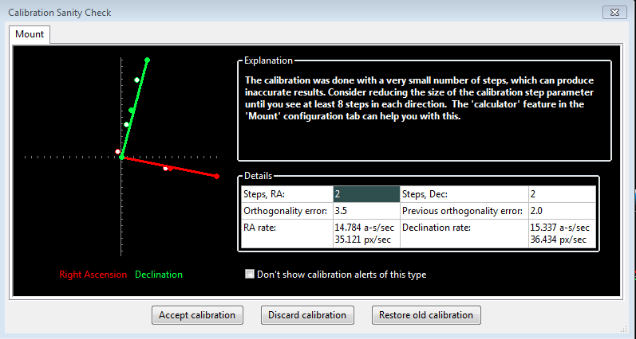
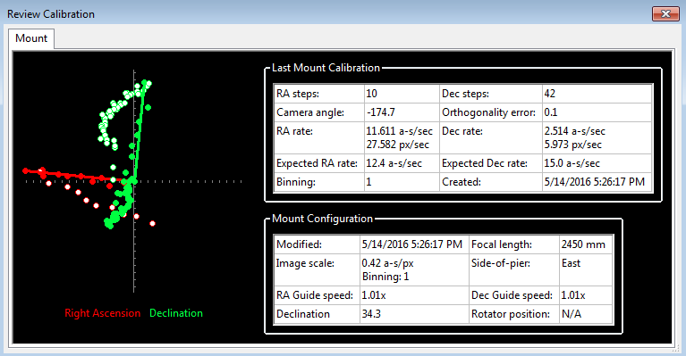
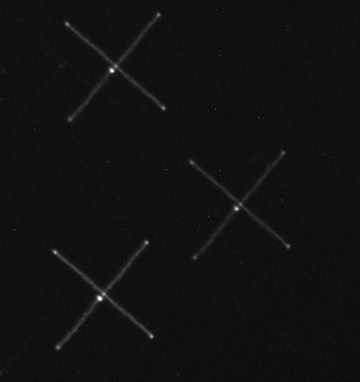
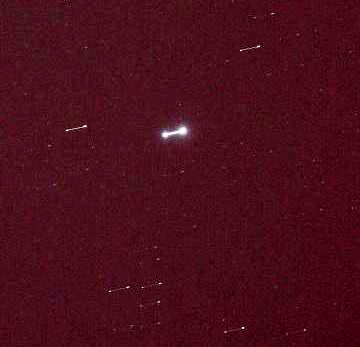

本分支采集模式说明：本页继承上游 PHD2 的通用排障方法。相机超时章节中关于“PHD2 使用单帧曝光”的解释仅适用于单帧模式。本分支还支持 QHY/ZWO 连续采集，ToupTek 默认使用视频模式；比较相机软件时，请确认双方采集模式一致。参阅高速采集与低延迟。
故障排除及分析
解决问题的一般方法
自 PHD2 于 2013 年首次发布以来，全球数千名用户的实际经验表明，人们认为的“导星问题”有 99% 并非导星软件本身的问题，通常来自两个方面：
1）用户的操作错误
2）赤道仪或安装在其上的设备存在机械问题
遇到困难、无法获得期望结果时，应记住这一点。仔细阅读 PHD2 网站文档或本内置帮助，遵循“最佳实践”文档中的步骤，并使用 PHD2 支持论坛的搜索功能，可以避免操作失误。除非视频由熟悉 PHD2 项目的人制作，否则 YouTube 视频的质量差异很大，常常包含误解，甚至把好坏建议混在一起，观看时应有所甄别。最常见的错误之一，是胡乱修改 PHD2 导星参数，试图解决设备中的机械问题；这只会让情况更糟。PHD2 会根据新建配置文件向导中的输入计算默认导星参数，因此这些参数已经针对您的设备作了调整。如果设备运行正常，默认值就应能产生合理结果；否则，多半需要检查操作错误或机械问题。机械问题令人沮丧，但在修复或减轻其影响之前，必须先隔离、识别并理解原因。机械问题不会自行消失，即使暂时减轻，也迟早会再次出现。上周甚至昨晚还正常的设备，今天也可能出问题，这是硬件的特点。
PHD2 或其他导星软件常常成为报告坏消息的一方，因为导星要求的精度极高。现代导星相机能测出几微米的运动；作为比较，人的头发直径约为 50 微米。在您尝试导星之前，整套设备可能从未接受过如此精细的测量，甚至厂家也未曾这样测试。初学者往往不愿相信存在机械问题，因为望远镜和赤道仪看起来转动正常、跟踪似乎不错、星图软件也能顺利控制它们，而且外观和做工都很好，更何况价格不菲！但这些都不能保证整套设备从一个地平线跟踪到另一个地平线、连续数小时保持亚角秒精度。幸运的是，大多数机械问题可以相对容易地消除或减轻，至少通常不需要花费很多钱。只要问题记录清楚、能够证明，大多数厂家愿意提供帮助，而 PHD2 正是记录这些问题的优秀工具。对多数人而言，排障成本主要是投入的时间、错失的拍摄机会和挫败感；这些都是这项爱好的一部分，成功的摄影者通常都学会了如何应对。
如果不熟悉望远镜赤道仪常见的机械问题，可以先阅读：常见赤道仪问题此外，摄影设备与主镜、赤道仪的安装方式也可能产生许多问题，包括导星镜、相机接头和线缆布置等。这些部件下垂、拖拽或自行移动时，会造成不必要的星点位移，看起来仿佛赤道仪跟踪出了问题。如果整体导星效果不理想，应当谨慎、系统地寻找原因；在黑暗中漫无目的地尝试只会失败。可按以下步骤排查：
1. 确认新建配置文件向导中输入的数据准确，包括导星镜焦距、赤道仪导星速度，以及需要手动输入时的相机像元尺寸。如果发现错误，不要逐项手工修补，直接重新运行新建配置文件向导。
2. 确认相机工作可靠，能够持续提供外观合理、一致的天空图像。若这方面有问题，请按以下章节操作：相机超时与连接问题.
3. 确认导星相机已准确合焦，使用 2 秒曝光时不会频繁丢星。调焦技巧见：星点轮廓工具。如果主相机和导星相机来自同一家厂商，还应确认 PHD2 连接的是正确相机。
4. 完成合理的机械极轴对准，使极轴与天极的偏差约在 10 角分以内。这需要调整赤道仪或楔形底座，松开紧固件并转动旋钮，无法仅靠软件完成。可使用极轴镜、高倍率目镜、辅助对极轴软件，或 PHD2 的极轴对准工具。此时无需极高精度，“足够接近”就已经够用。
5. 重点先在 PHD2 中获得可用的校准，不出现错误消息或警告。条件允许时，将望远镜指向赤纬 −20° 至 +20°，并选择足够远离东西地平线的赤经/时角位置。如果视野受限，也应尽量接近这些要求。若校准失败或屏幕顶部出现警告，请遵循以下建议：校准问题。这一步必须得到可用结果，因为校准是后续所有导星操作的基础。
6. 使用导星助手观察赤道仪不受导星修正时的自身跟踪表现。让 GA 测量赤纬回差，并在测量结束后应用其建议。如果 GA 运行期间出现大幅、突发的星点移动或其他无法解释的结果，应先解决这些问题。
7. 仍在同一天区，进行若干次各 15—20 分钟的导星测试。不要为了改善结果而修改任何导星参数。
8. 使用 PHD2 LogViewer 分析结果，针对发现的问题制定处理方案。可以到 PHD2 支持论坛寻求帮助。导星星点大幅或突发偏移
多数用户最终都会遇到星点突然大幅偏离锁定点的情况。这类问题绝大多数既不是赤道仪驱动本身引起，也不是 PHD2 导星指令造成，而是赤道仪上所安装设备发生了不期望的机械移动，尤其是导星相机与导星镜组件。若大幅偏移发生在赤纬方向，更应怀疑这一点，因为赤纬电机通常处于停止状态，只会偶尔执行短暂的导星指令。这些机械移动通常来自：
- 赤道仪跟踪目标过程中，重力方向变化导致导星组件各部件出现微小位移。
- 线缆拖拽、受限或挂住，尤其是连接导星相机的线缆。
- 阵风；较少见的原因还包括切换滤镜、自动调焦或反射镜移动。
- 使用赤道仪自身的回差补偿功能；PHD2 导星时不应启用这些功能。
在排除这些可能原因之前，请再次考虑上一节所述的微小测量尺度和容差。对许多导星配置，仅 5 微米的位移就能表现为超过 6 角秒的跟踪误差，相当于多个星点直径。每个机械连接面、紧定螺钉和可动部件，都可能自行移动如此微小的距离。即使线缆经过认真布置，也可能在某些天区或中天翻转后受到牵拉。扎带或带肋塑料线槽上的小凸起，也可能短暂挂住赤道仪的固定部位。对于大幅赤纬偏移，判断这些因素是否参与并不困难：在 PHDLogViewer 中放大相关时间段，查看偏移前是否立即出现了同方向、同样幅度很大的导星指令。多数情况下并没有。启用 PHD2 赤纬回差补偿时，导星刚开始可能出现此类情况，但应很快消失。若突发偏移发生在赤经方向，由于赤经电机持续运行，分析会复杂一些；不过，异常大且随机出现的偏移，仍更可能来自上述机械因素，而非赤经传动系统本身。相机超时与图像下载问题
有时导星图像无法下载或显示，严重时甚至会导致PHD2或其他相机应用程序无响应，即“卡住”。这几乎总与硬件、相机驱动或连接有关，最常见的原因之一是 USB 线缆或设备故障。由PHD2这类应用软件本身引起的可能性很低，因此应从系统底层开始排查。
为检测这类问题并避免卡死，PHD2 使用相机超时和重试机制。超时值位于高级设置的“相机”选项卡，默认 15 秒。这表示 PHD2 会在预计曝光结束之后再等待最多 15 秒接收图像。这是很宽裕的时间，对大多数相机都应足够。一旦超时，PHD2 会自动断开相机并尝试重新连接。 屏幕顶部会出现警告，说明发生了超时，以及重连是否成功。 无论重连成功与否，都说明存在需要处理的某种硬件问题。
可以按以下方法复现并定位问题：
确认使用最新版本的 PHD2（通常是开发版），以及最新的相机驱动。 某些相机厂商会频繁更新软件，而 PHD2 所使用的相应软件库也必须同步更新。
如果这些更新不向后兼容，就必须同时使用各组件的最新版本。
确认导星相机基本功能正常：用一条短线直接连接相机和计算机，再使用相机附带的原厂或测试软件进行曝光。
重复第 2 步，但改用 PHD2。 白天也能完成测试：连接相机，以 1—2 秒曝光持续循环较长时间。 白天 PHD2 画面可能全白，但只要循环曝光持续进行且没有错误消息，就表示这一步运行正常。 如果这一步出现问题，并不意味着是 PHD2 的问题。 区别在于，PHD2 使用相机的单帧曝光模式，而多数其他应用使用视频流模式。
单帧模式与相机之间需要更多双向通信，可能暴露驱动中的时序问题。
如果第 3 步未能触发故障，再加入主相机。
让摄影软件与 PHD2 同时循环曝光。 这可以暴露 USB 系统的流量和带宽问题。
如果第 4 步长时间运行仍正常，就改用最初出现问题时的 USB 线缆和计算机。
如果已经是同一套设备，还应考虑其他可能：
- 问题可能与温度有关，例如只在寒冷的夜间出现，白天不出现。
- 操作系统可能为节电而挂起了一个或多个 USB 端口。
Windows 10 及后续版本中，这类情况更常见。 打开 Windows 设备管理器，找出所有 USB 集线器或 USB 控制器条目。 逐个打开属性对话框，进入“电源管理”选项卡。
禁用所有允许操作系统为节电而暂停设备的选项。
- 确认测试计算机与实际摄影计算机使用相同类型的电源。 此阶段两台计算机都应连接交流电源。
- 两端接头松动也可能触发故障；线缆像实际拍摄时那样移动时，不应中断连接。
能够复现超时后，应首先检查 USB 线缆，再检查系统中的其他 USB 组件。 USB 相关问题的来源包括：
- 质量差或轻微受损的 USB 线缆。近年来，一些相机厂商随附的 USB 线质量不佳，因此不能认定原配线一定可靠。还应记住，天文摄影的环境较为苛刻，许多组件并非为寒冷户外条件设计。如果经常拆装设备，反复弯折可能损坏劣质导体；上周或上月还能正常使用的线缆，现在可能已经不可靠。 推荐使用导体规格为 24AWG、长度不超过 15 英尺（约 4.6 米）的优质 USB 线。
- 将 USB 2 相机和线缆插入 USB 3 端口——这种组合理论上向后兼容，但保证主要在硬件层面，驱动实现仍可能受到不利影响。
- 操作系统挂起 USB 端口（见上述第 5b 步）。
- 导星相机供电不足——主相机通常有独立电源，但导星相机等设备往往依赖 USB 线供电。尤其使用笔记本或廉价计算机时，可尝试用带独立电源的 USB 集线器为相机供电。 寒冷环境或线缆长度接近上限时，也可能需要这种做法。
如果仍无法隔离问题，还可以检查以下方面：
- 使用微软的 USB View 工具查看 USB 端口与控制器的树形连接结构。
- 尽量选择让主相机与导星相机分属不同 USB 总线的端口。
- 尝试另一种相机驱动。 许多厂商同时提供 ASCOM 和原生驱动，可改用此前未使用的那一种。 某些 ASCOM 驱动在错误修复和兼容性方面落后于原生驱动，并不罕见。
- 判断问题是否与 USB 总带宽有关，并尝试降低总占用：
a. 如果可以，降低主相机的 USB 使用上限；许多驱动提供此设置。
b. 对导星相机启用像素合并，但不要因此使像素尺度超过 6 角秒/像素。
c. 如果相机驱动支持，在 PHD2 中使用子帧。
d.摄影时不要运行其他高 CPU 占用程序，也不要让星图软件高频轮询设备或其他应用。
校准与赤道仪控制问题
如果您刚开始使用PHD2，或首次连接新设备，可能会遇到无法顺利完成校准的情况。降低这种风险的最佳方法是使用校准助手，强烈建议初学者这样做。校准问题通常有两种形式：1）赤经或赤纬移动不足，导致校准直接失败；2）校准完成，但结果可疑。这两种情况都会在 PHD2 窗口顶部显示警告。校准失败通常又有两类原因：
- 赤道仪、连接问题或操作失误：这是最常见的来源。最适合排查的工具是“工具”菜单中的“手动导星”或“星点十字测试”，详见本帮助的工具章节。在“手动导星”窗口使用方向按钮直接向赤道仪发送指令，同时观察图像窗口中的一颗星。将脉冲时长设得较大，至少几秒，以便清楚判断赤道仪是否移动。尝试四个方向，确认星点移动量大致相当。如果赤道仪没有响应，就应排查硬件或连接问题，而不是PHD2。操作方面，如果望远镜太靠近天极，或赤道仪未正确初始化、解除停放并以恒星时速度跟踪，校准就无法完成。若通过 Shoestring 设备连接赤道仪，可查看指示灯，确认指令是否到达。同样，兼容 ST-4 的导星相机也可能有指示灯显示正在接收导星指令。若使用 ASCOM 连接，确认 COM 端口分配正确，且选择了适合设备的 ASCOM 赤道仪驱动。可利用 ASCOM 附带的 POTH 等工具确认驱动与赤道仪通信正常。最好使用最新版本的赤道仪 ASCOM 驱动，以确保完整支持脉冲导星。
- 校准步长不正确：如果使用新建配置文件向导，并正确输入了焦距、相机像元尺寸和赤道仪导星速度，校准步长应当已经正确。但仍应核对，因为初学者常会输入错误值。如果手动建立或修改配置文件（不推荐），或者改变了赤道仪导星速度，可能需要在高级设置的“导星”选项卡中调整“校准步长”。该处帮助说明了参数用途，通常能很快解决。但如果已认真完成向导，而星点仍移动不足或完全不动，原因很可能在别处。
校准合理性检查 与警告
校准也可能已经完成，但 PHD2 会发出警告，指出部分结果可疑。使用校准助手 CA 可以降低这类情况的概率；即使 CA 触发警告，也会更具体地解释校准中出现的问题。无论如何，警告并不表示校准失败或不可用，只是提醒某些结果看起来不太正常。合理性检查对话框会说明问题，并列出校准结果的相关细节：

目前 PHD2 会检查四项内容：
- 步数过少（如上图）——若赤道仪本身正常，通常很容易解决。减小每步校准脉冲时长，直到西向和北向校准都至少需要 8 步。如果通过新建配置文件向导设置设备，本应已有合理的初始步长；此时警告通常说明向导参数输入错误，或赤道仪导星速度发生了变化。应仔细核对。如果 RA 与 Dec 的步数差别很大，除非两轴设了不同导星速度，否则往往说明存在赤纬回差。
- 正交误差——相机图像中的两轴方向通常独立计算，虽然它们应当相互垂直。角度计算不需要极高精度，但如果明显不正交，就应重新校准。若反复出现此类警告且偏差较大，必须查明并解决原因。常见原因包括极轴误差较大、赤纬回差大，或赤经周期误差大。这些问题都会使 PHD2 测量一个轴时，星点又沿另一个轴显著移动。若怀疑这些因素，可以先接受校准，再运行导星助手测量极轴误差、赤纬回差和赤经跟踪误差。另一种可能是赤道仪根本没有移动，测到的位移只是视宁度波动；这通常能从对话框左侧的校准图看出来。如果角度误差较小，并且确信硬件正常，可在高级设置“导星”选项卡中启用“假定 Dec 与 RA 正交”，避免以后再出现此类警告。但只有误差确实很小时才应这样做，否则只是忽视严重问题。
- 赤经与赤纬速度可疑——假定赤道仪报告的导星速度准确，测得的赤经导星速度应约等于赤纬速度乘以 cos（赤纬）。也就是说，望远镜越接近天极，表观赤经速度越小。PHD2 不会判断究竟哪个速度错误，只会提示两者关系不正常。您可以自行简单核对：若导星速度为 1 倍恒星时，赤纬速度应约为 15 角秒/秒；若为 0.5 倍恒星时，赤纬速度应约为 7.5 角秒/秒，以此类推。测得赤纬速度明显小于赤经速度，往往说明赤纬回差很大。使用触发此警告的校准，可能因实际赤纬速度大于测得速度而导致修正过冲。解决方法是在校准前手动消除赤纬回差。有两种方式：1）确保赤道仪最后一次转动方向为北；2）用手控器以导星速度向北（“上”箭头）移动 10—20 秒。
- 结果不一致——如果本次结果与上次使用的校准明显不同，就会出现警告。这可能只是因为设备配置发生了变化，并不一定存在实际问题；不过，应考虑为新配置建立独立的设备配置文件。这样 PHD2 会分别记住设置，便于切换。如果没有更改设备，就应查明结果差异为何这么大。
出现这些警告时，相关数据字段会按消息类型高亮显示。可以忽略警告并“接受校准”，选择“丢弃校准”重新执行，或“恢复旧校准”。第三种选择允许稍后再做校准，先用上次的良好数据导星。如果同类警告反复出现，而您确信没有实际问题，可勾选“不再显示”屏蔽此类警告。但应知道，PHD2 的合理性检查适用于广泛的设备，大多数用户并不会看到这些校准警告。
赤纬回差
赤纬回差是最常见的校准问题来源，几乎所有齿轮传动赤道仪都存在不同程度的回差。轴改变运动方向时，即使电机已经转动，望远镜也可能不会立即反向移动，通常是传动齿轮啮合存在间隙。许多较廉价的赤道仪可能要过几秒，轴才开始沿正确方向移动，造成校准和导星效果不佳。请看以下校准查看窗口：

第一条线索是两轴校准所需步数：赤经 10 步，赤纬却要 42 步。这说明赤纬运动不一致，很可能是回差没有消除。这也解释了指令由北转南后，浅绿色赤纬数据点为何四处游移。最后，虽然两轴导星速度设置相同，算出的赤纬速度却远低于赤经速度；这实际上会触发校准警告。这里需要处理两个问题：首先，校准结果不佳，应重新校准以更准确地测量赤纬导星速度；其次，即使速度校准正确，赤纬反向时仍可能表现不良。按以下步骤可以改善校准：
将望远镜指向有可用星点的天区，最好靠近 Dec=0° 且距子午线不超过 15°，开始循环曝光。
用手控器向北（“上”箭头）移动，直到在屏幕上看到星点移动。
开始校准。
这样可预先消除大部分赤纬回差，通常能改善校准结果。根本上的回差问题一般仍需要机械调整。如果赤道仪导星速度尚未接近 1 倍恒星时，提高速度可能立即带来改善。也可以尝试 PHD2 的回差补偿，但回差很大时，例如超过 3 秒，通常效果不好。如果无法消除回差或将其降到可处理的水平，应考虑赤纬单向导星：先确定极轴误差使赤道仪向哪个方向漂移，再让 PHD2 只向相反方向修正（见单向导星）。此设置位于高级设置“算法”选项卡中的“赤纬导星模式”。例如总体向北漂移，就将指令限制为仅向南。这显然不是理想方案，但仍能使用较长曝光并获得良好导星结果，许多摄影者会采用这种方式。
验证基本赤道仪控制——星点十字测试
如果 反复无法完成没有警告的校准，应做一个简单测试，确认赤道仪是否响应导星指令。测试基本模拟校准时的动作，但更直接，更容易理解情况。我们称之为“星点十字”测试：让主相机开始曝光，再发送一组导星指令，使视场中的星点画出明显的十字轨迹。希望得到的图像大致如下：

轨迹整体朝向不重要，它只是相机旋转角度的结果。重要的是两条线相互垂直，而且相对于中心起点，四个方向的长度大致相等。如果图像并非这种形状，导星效果就会受损，甚至无法导星。例如下面这个不良结果：

星点只沿一个轴移动，本例中只有赤经方向。发送给赤道仪的赤纬指令完全没有作用。在赤道仪端修好这个问题之前，无法进行赤纬导星；甚至要先关闭赤纬导星，才能完成校准。不良结果还有许多其他形态，分别指向赤道仪、导星线，或较少见的 ASCOM 赤道仪驱动问题。基本可以确定与 PHD2 无关。
手动测试步骤如下：
- 将赤道仪导星速度设为 1 倍恒星时。在 PHD2 中打开“手动导星”，设置初始“导星脉冲时长”，例如 5 秒。
- 让主相机开始一次 60 秒曝光。
- 先发送一个 5 秒西向脉冲，再发送两个 5 秒东向脉冲，最后发送一个 5 秒西向脉冲。星点应大致返回起点。每次发送后等待约 5 秒，让指令完成，再发送下一条。
- 然后发送一个 5 秒北向脉冲、两个 5 秒南向脉冲，最后再发送一个 5 秒北向脉冲。星点应再次返回起点。
- 等待主相机下载图像，查看结果。
也可以使用其他脉冲时长，例如较短时长，以确认赤道仪能够响应。只要确保主相机总曝光时间长于所有导星脉冲时长之和，并留出一定余量即可。由于赤纬回差，多数赤道仪不会让星点精确返回中心，第一幅示例图中就能看到这一点；但应当足够接近，否则需要进一步检查赤纬回差。PHD2 也提供星点十字测试工具，可以自动完成上述步骤。
这个测试的优点，是将问题简化到最基本的层面：赤道仪究竟会不会按指令移动。它完全不涉及 PHD2 导星参数，因为测试不使用这些参数。您可以用测试结果与赤道仪厂家，或熟悉该型号及其常见问题的用户交流。
测量赤道仪的表现
如果 始终得不到良好导星效果，第一反应可能是大幅改动导星参数，希望碰到某个神奇设置。这几乎从不奏效，反而通常使情况变糟。如果新建配置文件向导生成的默认参数无法得到合理结果，问题很可能在硬件，需要找出根本原因。理解原因之后，即使暂时无法真正修复，也可能改善导星；但理解问题是前提。要了解赤道仪的实际表现，请按以下步骤操作：
1. 使用新建配置文件向导为测试建立新的设备配置文件，确认导星镜焦距和相机像元尺寸正确。不确定时应查资料，不要猜测。
2. 如果支持，使用 ASCOM 连接赤道仪，并将导星速度设为 0.5—1 倍恒星时。关闭赤道仪自身的所有回差补偿。
3. 使用 2 秒曝光，让 PHD2 自动选星；望远镜指向 Dec=0° 附近，且至少高出东西地平线 45°，以减小视宁度影响。
4. 运行导星助手 10—15 分钟，并应用其建议，尤其是最小移动量。让它测量赤纬回差。此阶段可能需要较大的搜索区域以避免丢星，但其中不能有多颗恒星。回差测试会将星点向北移动较远，因此应选择靠近相机画面南侧的星点，留出足够空间。
5. 观察 GA 运行情况。如果碰到赤道仪或发生明显异常，应停止并重新测试。目的是测量正常运行时的表现。
6. 除导星助手建议的修改外，不要改变其他导星参数。
7. 仔细查看导星助手表格。每一项都能提供关于赤道仪表现的有用信息。这些结果也会写入导星日志，供后续分析。
8. 如果第 3 步出现校准警告，最好先解决再继续。使用不良校准通常无法得到好的导星结果。如果极轴误差达到或超过 10 角分，也应先改善，然后重复上述步骤。
9. 让 PHD2 再连续导星 10—15 分钟；只要没有风或其他操作造成的严重异常，就让它持续运行。不要在这段时间改变任何导星参数。
若要自行分析，可使用 PHDLogView 和“分析 PHD2 导星结果”教程，也应参阅“PHD2 最佳实践”。这些资料都可在 OpenPHDGuiding.org 网站的“News”选项卡找到。若需要帮助理解结果，请将导星日志和调试日志一起上传到 OpenPHD2 Google 论坛，我们很乐意协助。
丢星事件
当 PHD2 在相机图像中找不到主导星星点时，会发生以下情况：
- 屏幕闪烁并发出提示音。可以在“高级设置/导星”中关闭声音，但屏幕始终会闪烁。
- 不再发送导星指令，并开始下一次导星相机曝光。
- 向连接到 PHD2 的摄影软件发送丢星事件消息。
- 状态栏显示丢星消息及原因，例如信噪比低、HFD 太小、星点总亮度低或总亮度变化过大。
当搜索区域内的目标不再符合恒星识别标准时，就会发生丢星。目标可能不够亮，即信噪比 SNR 或总亮度（mass）太低；也可能尺寸 HFD 低于最小 HFD 设置，因而更像传感器噪声。如果使用“星点总亮度变化检测”来区分搜索区域内多颗相似恒星，总亮度变化超过允许值时也会丢星。对于当前版本 PHD2，这项功能通常没有必要，可以禁用。无论哪种情况，排查的第一步都是理解丢星原因，并判断是天空条件变差、机械跟踪误差，还是选星参数不合适。初学者常见的原因是导星相机未准确合焦；应按星点轮廓工具章节的方法确保相机始终合焦良好。星点轮廓工具
PHD2 不会执行复杂的丢星恢复程序，只会继续曝光，并检查星点是否重新出现在当前搜索区域。这对短暂或间歇的问题，例如薄云、阵风、偶发机械问题很有效，但前提是赤道仪自身跟踪精度足以让星点在一段合理时间内留在搜索区域。丢星持续越久，赤道仪越可能逐渐偏离目标；很久以后重新进入搜索区域的星点，可能已是另一颗恒星。此时 PHD2 会恢复导星，但原目标不再位于中心，甚至可能已移出视场。长时间丢星后的恢复由用户或摄影自动化软件负责，而不是 PHD2。正确恢复需要将望远镜重新转到原始天空坐标，PHD2 不具备完成这一流程的功能。
警告消息
PHD2 有时会在主显示窗口顶部显示警告，通常包含需要注意的错误或诊断信息。正常运行时一般不会出现；若看见警告，本节可帮助决定如何处理。
暗场库与坏像素图警告
“使用暗场库或坏像素图”——使用暗场库或坏像素图，可以降低 PHD2 将热像素或传感器噪声误认成恒星的概率。如果忽略此提示，就可能出现 PHD2 意外从真实导星星点切换到热像素、无法继续正确导星的情况。
格式或几何尺寸不匹配——暗场和坏像素图必须与所用相机的传感器格式一致。如果在已有配置文件中更换相机，旧的暗场/BPM 文件将不可用，就会出现此警告。为避免这种情况，更换相机时应建立新的配置文件。仍然需要重新拍摄暗场或生成坏像素图，但可以保留原文件供旧相机使用。若 PHD2 错连到另一台相机，也可能出现格式不兼容警告，尤其是主相机和导星相机来自同一家厂商时。可以在连接对话框中明确指定用于导星的相机，参见指定相机 ID。如果并非连接错误，就应从头重建暗场库或坏像素图，更多信息见：暗场与坏像素图
ASCOM 警告
首次连接赤道仪、相机或其他 ASCOM 设备时，可能出现提示，说驱动不支持某项必需功能。例如，过时的 ASCOM 望远镜/赤道仪驱动可能不支持脉冲导星。此时只能更新 ASCOM 驱动。驱动通常可从 ASCOM 网站下载，某些设备则由厂家提供。 一般应使用最新驱动，避免遇到已经修复的问题。
还可能出现以下与 ASCOM 赤道仪驱动相关的警告：
1. “发送到赤道仪的 PulseGuide 指令失败，导星可能无效。”通常由 ASCOM 驱动缺陷或时序敏感性引起，一般无法知道导星指令究竟是否正确执行。如果很少出现且导星效果可接受，可以忽略。即使出现警告，PHD2 仍会继续发送导星指令，因此不必立即操作。如果频繁出现，请提供调试日志，我们可以帮助您向 ASCOM 驱动作者描述问题。
2. “导星已停止：望远镜开始快速转动。”消息本身很明确，但“正在转动”是 ASCOM 驱动报告给 PHD2 的，PHD2 并不知道望远镜是否真的在转动。如果不是您在导星时误操作转动望远镜，可能是驱动的时序问题。要临时绕过，可在高级设置“导星”选项卡取消“赤道仪快速转动时停止导星”。这样可以继续导星，但结果可能不可靠。调试日志应能提供向驱动作者描述问题所需的细节。
3. “赤道仪报告了无效的导星速度。”某些新驱动不遵循标准，报告不合理的速度，常见原因是没有使用正确的度/秒单位。PHD2 会将这些速度视为“未知”并忽略。这会降低 PPEC 导星算法的精度，并削弱校准查看及其他诊断工具的效果。这不是 PHD2 的问题，必须由驱动作者修复。
相机超时警告
相机时序和超时相关的警告已在上文介绍：相机超时
校准警告
赤道仪校准期间可能出现多种警告， 具体说明见：校准警告
最大脉冲时长限制警告
正常导星时，可能出现警告，指出 RA 或 Dec 最大脉冲时长限制阻止 PHD2 保持锁定。如果您把这些参数设得低于默认值，应恢复默认。但如果限制明显大于 1 秒，警告通常表示出现了需要解决的机械问题。简单的情况包括线缆挂住、阵风、碰到赤道仪等外界事件，使星点产生较大位移；尽可能消除原因后继续导星即可。另一种情况是星点偏差持续累积，却完全没有得到修正。例如 PHD2 无法正确向北或向南移动赤道仪，未修正误差最终会触发警告。也可能是高级设置“导星”选项卡中的“中天翻转后反转赤纬输出”设置错误，造成赤纬导星越修越偏。这类问题需要诊断，单纯增大最大脉冲时长没有帮助。
图像显示窗口问题
新用户常常反映主窗口图像噪声极大，或几乎全白、全黑。如果相机确实正常工作并下载图像，这往往是因为画面中没有可用星点。例如在室内或白天测试，几乎总会出现这种现象。此时图像窗口外观没有诊断价值，不必据此判断。PHD2 的自动显示拉伸旨在帮助您看清夜空中的真实星点；没有星点时，它仍会把画面中最暗到最亮的数值范围拉伸出来，即使其中基本什么也没有，因此产生噪声很大、全白或全黑的显示。导星相机未合焦也会造成显示问题。调焦可能繁琐，但对良好导星至关重要。一个有效方法是先选择明亮但未饱和的恒星，先达到大致合焦，再逐渐换用较暗的星，通过 PHD2 星点轮廓工具测量星点尺寸，精调焦点。使用巴赫金诺夫调焦板或其他软件的调焦工具也能得到好结果。采用什么工具并不重要，但仅凭屏幕外观判断焦点，通常效果不好。
热像素与选星问题
大多数导星相机都可能出现热像素聚集，被 PHD2 误认成导星星点。使用自动化工具时，如果自动选星误选热像素，会尤其麻烦。许多相机只需简单的暗场就能减少或消除热像素问题，因此应始终先从暗场开始。但另一些相机需要建立坏像素图，并在缺陷像素的位置或大小变化时更新。传感器会随时间老化，也会受温度变化影响，因此应愿意做少量坏像素图维护工作。逐步操作说明见本帮助的坏像素图章节。这些问题不同于宇宙射线击中传感器造成的瞬时亮点。宇宙射线也可能干扰导星，但对此基本没有有效的预防方法。
推荐让 PHD2 自动选择导星星点，因此应利用可用的界面设置帮助它正确选星。高级设置“导星”选项卡中的最小 HFD，是避免选中热像素最有效的工具之一。设置应允许系统中最小、最暗的真实恒星被选中。先用星点轮廓工具测量一批有代表性的真实导星星点，再将最小 HFD 设为能够接受这些恒星、同时排除尺寸更小的传感器缺陷亮点的值。另一方面，还应指定系统可输出的最亮像素值，即代表饱和的 ADU。这样可以避免 PHD2 错误排除轮廓顶部平坦、但实际上并未饱和的恒星。该控件位于高级设置“相机”选项卡的“星点饱和检测”组：选择“按最大 ADU 判断饱和”，并填入正确数值。8 位相机通常在约 255 饱和，16 位相机约为 65000 ADU。如果不清楚，可以对准明亮恒星，用数秒曝光，然后查看星点轮廓窗口。其中“峰值（Peak Value）”就是最亮像素的 ADU，可用于判断图像是 8 位还是 16 位。配合使用这两个控件，通常能明显改善 PHD2 自动选星效果。
恢复可用的基准设置
尽管有相反的建议，您可能仍曾快速、缺乏依据地改动导星参数，最后发现表现没有改善，甚至更差。继续排查前，应先恢复默认设置。如果配置文件由新建向导建立，参数已经根据具体设备设置，通常很接近合理值。使用这些设置仍出现严重问题时，原因多半在赤道仪或其他硬件。盲目修改导星参数几乎不能解决，反而常使情况恶化。恢复默认值有以下几种方法：
- 在高级设置“算法”选项卡中，将鼠标停留在字段上，查看工具提示显示的默认值，再逐项恢复。但最小移动量依赖像素尺度，提示中的默认值对它未必准确。这种方法适合只恢复少量设置。
- 在“算法”选项卡中，分别单击当前 RA 和 Dec 导星算法的“重置”按钮。这是恢复全部导星参数的推荐方法。最小移动量会恢复为新建配置文件向导最初计算的值；如果后来曾按导星助手建议调整，应重新运行导星助手。
- 在“连接”对话框中单击“管理配置文件”，重新运行新建配置文件向导。选择与现有配置相同的相机和赤道仪，并为新配置起一个新名称。如果要复用原暗场库和坏像素图，切换到新配置后，通过“暗场”菜单从旧配置导入。确认新配置满意后，可以删除旧配置。
导星表现不佳
所有设备开始正常工作后，通常很快就能得到较好的导星效果。您需要自行确定什么程度算“足够好”，每个人的标准可能不同。但如果拍摄图像中星点拖线或拉长，结果不可接受，就需要系统地解决问题。盲目修改各种参数看起来很诱人；调整参数本身没有错，这正是参数存在的用途，但应先理解它们的作用及要解决的问题，再谨慎调整。PHD2 的默认设置经过仔细选择，能让大多数业余设备和观测地点获得合理效果。最佳设置完全取决于像素尺度、视宁度和具体赤道仪的表现，也就是说因您的情况而异。不存在一本给出万能正确参数的“宝典”，其他用户的参数可能完全不适用。如果用新建配置文件向导开始，默认值通常已很好地匹配像素尺度。导星助手可以进一步说明当前视宁度，以及如何调整最小移动量避免追逐视宁度。导星助手或手动导星工具也可检查赤道仪回差，帮助理解赤纬导星表现。
日志分析
定位问题或调优始终需要使用 PHD2 日志。两类日志都采用便于人工阅读的格式，导星日志还专门设计为易于导入其他软件。如“工具”章节所述，可以使用 PHDLogViewer 或 Excel 显示总体表现、计算统计指标，并检查导星异常的时间段。使用 Excel 等软件时，将逗号指定为列分隔符即可。不过，强烈建议用 PHDLogViewer 分析；开发者在 PHD2 Google 论坛提供支持时也使用它。
导星日志内容
日志内容会随着新功能增加而演变，但基本结构保持稳定，开发时会尽量避免破坏现有解析软件。如果希望自行分析日志，以下信息会有帮助。
PHD2 导星日志可能包含零次或多次校准，以及零段或多段导星记录。 每一段都带有头部，提供所用导星算法和 PHD2 内部导星参数的大部分信息。 在校准或导星记录开始处，头部最后一行定义了各列名称。 各列含义如下：
校准列：
- dx, dy
表示相机坐标系中相对于起始位置的偏移，单位为像素。
- x, y 是每个校准步骤结束时，导星星点在相机中的 x/y 坐标。
- Dist 是相机坐标系中的总位移距离（dist = sqrt(dx*dx + dy*dy)）。
PHD2 使用该数值计算校准参数。
导星列：
- dx, dy 与校准时含义相同，表示相机坐标系中相对于导星星点“锁定位置”的偏移。
- RARawDistance 和 DECRawDistance：将 dx、dy 转换到赤道仪坐标系后的值；也就是根据导星相机的旋转角度，将相机 X/Y 位移映射为赤道仪 RA/Dec 位移。
- RAGuideDistance 和 DECGuideDistance：各导星算法的输出。 导星算法根据“原始”位移判断两个轴是否需要调整，以及应调整多少。 例如，设置了“最小移动量”时，即使原始位移不为零，导星修正位移仍可能为零。
- RADuration、RADirection、DECDuration、DECDirection：由上述两个导星修正位移确定的脉冲时长和方向。 其中 duration 是实现 RAGuideDistance 和 DECGuideDistance 所需的导星脉冲时长，单位为毫秒。
- XStep、YStep：使用自适应光学设备时，对该设备执行的步进调整时长。
- StarMass：导星星像总亮度的测量值。
- SNR：PHD2 内部使用的“星点检测比”，本质上衡量星点与天空背景的可区分程度。
- ErrorCode：表示导星星点测量质量的整数代码：
- 0——无错误。
- 1——星点饱和。
- 2——星点信噪比低。
- 3——星点总亮度太低，无法准确测量。
- 4——星点 HFD 低于 Min-HFD。
- 5——星点 HFD 高于 Max-HFD。
- 6——星点漂移得太靠近图像边缘。
- 7——星点总亮度变化超过指定幅度（仅在启用总亮度检查时）。
- 8——意外错误。
所有距离值都以像素为单位。 导星记录的头部会显示 PHD2 已知的像素尺度；如有需要，可用它将像素距离换算为角秒。
报告问题
如果遇到确实属于PHD2本身的应用程序问题，欢迎向 open-phd-guiding Google 群组报告：OpenPHDGuiding 群组您需要先加入群组才能获得帮助。提供的问题信息越充分，我们越可能解决。请遵循以下建议：
- 尝试复现问题。如果有清晰的操作步骤，我们更可能迅速找到解决办法。能够复现后，应尽量将步骤缩减到最少。请记住，我们自行复现时并没有您的硬件和计算机环境。
- 尽可能完整地描述配置，包括操作系统、设备型号、PHD2版本等。
- 上传出现问题那次会话的PHD2日志，这是关键步骤。请使用“帮助”菜单中的“上传日志文件”，方便地选择相关日志并上传到我们的服务器，不受文件大小限制。不建议把日志直接作为论坛消息附件，大文件往往根本无法附加。如果不能复现，请尽量估计首次看到问题的时间，帮助我们在调试日志中定位，而无需逐行搜索大量记录。如果在论坛求助却没有上传日志，通常仍会被要求补充，只会增加不必要的等待。